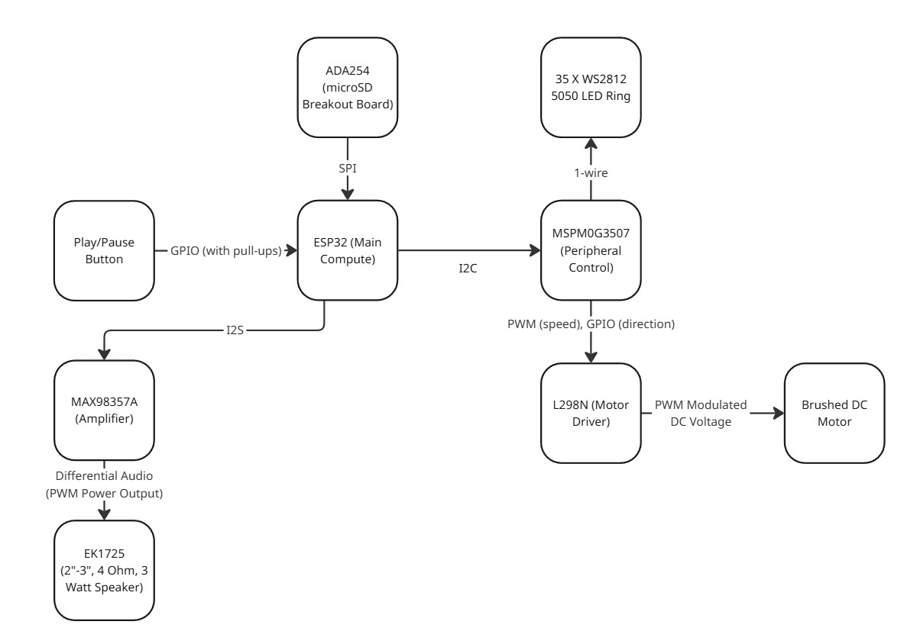

Overview
The Spinning Cat Speaker is a custom-built embedded audio system that plays music while driving a DC motor to spin a 3D-printed cat figurine in sync with the beat. An RGB LED ring mounted on the assembly pulses with the music for a visual effect that complements the audio.
The system is powered via a 12V USB connection and streams audio and motor movement data concurrently from a microSD card. Physical buttons allow the user to cycle through tracks, control playback, and trigger LED effects.
Features
System Architecture
The system is built around two microcontrollers working in tandem over UART:
ESP32 — Main Compute
Handles audio decoding and playback, microSD streaming via SPI, I2S audio output to the amplifier and input from the microphone, button input handling, and UART communication to the peripheral controller.
MSPM0G3507 — Peripheral Control
Receives commands from the ESP32 over UART and drives the motor via PWM/GPIO to the L298N motor driver, and controls the WS2812 LED ring over a 1-wire interface.
System Diagram

[ Replace with system_diagram.jpg ]